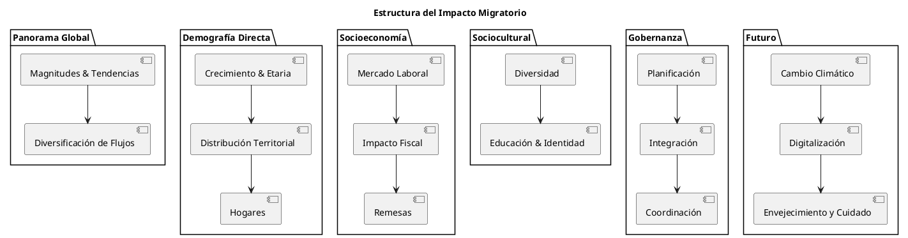

Impacto de la Migración en la Dinámica Poblacional
Impacto de la Migración en la Dinámica Poblacional
1.1 Magnitudes y Tendencias Actuales
La migración internacional ha alcanzado dimensiones sin precedentes en la historia contemporánea. Según las últimas estimaciones de la División de Población de las Naciones Unidas para 2024, el número de migrantes internacionales ascendió a aproximadamente 304 millones de personas, representando casi el doble de la cifra registrada en 1990. Esta cifra constituye aproximadamente el 3.6% de la población mundial, evidenciando que la movilidad humana se ha convertido en un fenómeno estructural de las sociedades modernas.
Los datos del Informe sobre las Migraciones en el Mundo 2024 de la Organización Internacional para las Migraciones revelan patrones adicionales significativos. El número de personas desplazadas forzosamente alcanzó un récord histórico de 117 millones al final de 2022, mientras que las remesas internacionales experimentaron un crecimiento extraordinario del 650% entre 2000 y 2022, pasando de 128 mil millones a 831 mil millones de dólares estadounidenses.
| Indicador | Valor |
|---|---|
| Migrantes internacionales | 304 millones |
| % de la población mundial | 3.6% |
| Desplazados forzosos (2022) | 117 millones |
| Remesas (2000) | 128 mil millones USD |
| Remesas (2022) | 831 mil millones USD |
| Crecimiento remesas (2000‑2022) | +650 % |
1.2 Diversificación de Flujos Migratorios
Los patrones migratorios contemporáneos se caracterizan por su creciente diversificación geográfica y demográfica. La migración tradicional Sur–Norte ha sido complementada por flujos significativos Sur–Sur, que representan aproximadamente el 40 % de todas las migraciones internacionales. Esta diversificación refleja el desarrollo económico diferenciado entre regiones y la emergencia de nuevos polos de atracción migratoria en países de ingreso medio.
La composición demográfica de los flujos migratorios también ha experimentado transformaciones sustanciales. La participación femenina en la migración internacional ha aumentado consistentemente, alcanzando aproximadamente el 48 % del total de migrantes internacionales. Este fenómeno, conocido como la feminización de la migración, tiene implicaciones profundas para las dinámicas familiares, los mercados laborales y las políticas de integración social.
2. Impactos Demográficos Directos
2.1 Crecimiento Poblacional y Estructura Etaria
La migración ejerce efectos directos sobre el crecimiento poblacional tanto en países de origen como de destino. En los países receptores, la inmigración contribuye significativamente al crecimiento demográfico, compensando frecuentemente las bajas tasas de natalidad características de sociedades desarrolladas. El caso de Chile ilustra esta dinámica de manera particularmente clara, donde el Censo 2024 reveló que aproximadamente el 65 % del crecimiento poblacional registrado entre 2018 y 2023 correspondió a población migrante, con 611 724 nuevos migrantes ingresando al país durante este período.
La migración también modifica sustancialmente la estructura etaria de las poblaciones receptoras. Los migrantes internacionales tienden a concentrarse en grupos etarios jóvenes y en edad laboral, lo que puede contribuir a mitigar los efectos del envejecimiento poblacional en países desarrollados. Esta rejuvenecimiento demográfico tiene implicaciones significativas para la sostenibilidad de sistemas de seguridad social y el dinamismo económico.
| Indicador | Valor |
|---|---|
| Migrantes nuevos | 611 724 |
| Porcentaje del crecimiento | 65 % |
2.2 Distribución Territorial y Concentración Urbana
Los flujos migratorios generan patrones específicos de distribución territorial que modifican las densidades poblacionales regionales. La concentración migratoria en centros urbanos principales es un fenómeno generalizado que intensifica los procesos de urbanización y puede generar presiones sobre la infraestructura y servicios públicos urbanos.
La experiencia de países como Brasil demuestra cómo la migración interna hacia centros metropolitanos como São Paulo y Río de Janeiro continúa influyendo en el crecimiento demográfico diferencial entre regiones. Esta redistribución poblacional tiene efectos multiplicadores sobre el desarrollo regional desigual y la configuración de mercados laborales locales.
2.3 Formación y Composición de Hogares
La migración influye significativamente en los patrones de formación de hogares y las estructuras familiares tanto en países de origen como de destino. Los procesos de reunificación familiar, las migraciones escalonadas y la formación de hogares transnacionales crean nuevas configuraciones demográficas que desafían las categorizaciones tradicionales de estructura familiar.
La migración femenina, en particular, ha generado transformaciones en los roles de género y las responsabilidades de cuidado, creando cadenas globales de cuidado que conectan hogares en múltiples países. Estos arreglos familiares transnacionales tienen implicaciones profundas para el bienestar de niños, adultos mayores y otros miembros dependientes de las familias migrantes.
3. Efectos Socioeconómicos Amplificados
3.1 Transformación de Mercados Laborales
La migración ejerce efectos complejos sobre los mercados laborales que van más allá de los simples incrementos en la oferta de trabajo. Los migrantes aportan diversidad de habilidades, conocimientos y capacidades empresariales que pueden generar efectos dinámicos sobre la productividad y la innovación. La complementariedad entre trabajadores nativos y migrantes frecuentemente genera efectos positivos sobre los salarios y las oportunidades de empleo para la población nativa.
Sin embargo, estos efectos varían significativamente según el nivel de calificación de los migrantes, las características de los mercados laborales locales y las políticas de integración implementadas. La concentración de migrantes en sectores específicos puede generar competencia directa con trabajadores nativos de similar calificación, particularmente en segmentos de baja cualificación donde la sustitución laboral es más factible.
3.2 Impacto Fiscal y Servicios Públicos
La incorporación de población migrante genera efectos fiscales complejos que requieren análisis diferenciado por niveles de gobierno y horizonte temporal. En el corto plazo, el aumento de la demanda por servicios públicos básicos como educación, salud y servicios sociales puede generar presiones sobre los presupuestos públicos locales. Esta presión es particularmente intensa en jurisdicciones de primera acogida donde se concentran inicialmente los flujos migratorios.
No obstante, el impacto fiscal de largo plazo tiende a ser positivo cuando los migrantes se integran efectivamente al mercado laboral formal y contribuyen al sistema tributario. Los migrantes en edad laboral contribuyen a la sostenibilidad de sistemas de seguridad social mediante sus aportes a pensiones y seguros de salud, mientras que su demanda por servicios públicos específicos para adultos mayores se materializa décadas después de su llegada.
3.3 Dinámicas de Remesas y Desarrollo
Las remesas internacionales constituyen uno de los impactos más significativos de la migración sobre las economías de origen. Con flujos que superan la inversión extranjera directa en muchos países en desarrollo, las remesas se han convertido en una fuente fundamental de divisas y un mecanismo importante de reducción de pobreza a nivel familiar.
El crecimiento exponencial de las remesas, que aumentaron 650% entre 2000 y 2022 según datos de la OIM, refleja tanto el incremento en el volumen de migrantes como la mejora en los canales de transferencia de recursos. Estas transferencias no solo impactan el bienestar inmediato de las familias receptoras sino que también generan efectos multiplicadores sobre las economías locales a través del consumo e inversión en vivienda, educación y pequeños emprendimientos.
| Año | Remesas (mil millones USD) |
|---|---|
| 2000 | 128 |
| 2022 | 831 |
| Incremento | +650 % |
4. Transformaciones Socioculturales
4.1 Diversidad Cultural y Cohesión Social
La migración introduce elementos de diversidad cultural que enriquecen las sociedades receptoras pero también pueden generar tensiones sociales si no se gestionan adecuadamente. La interacción entre diferentes grupos culturales puede promover la innovación, la creatividad y el intercambio de conocimientos, contribuyendo al dinamismo social y económico.
Sin embargo, la diversidad cultural también puede generar desafíos para la cohesión social, particularmente cuando existen diferencias significativas en valores, prácticas religiosas o normas sociales. La gestión efectiva de esta diversidad requiere políticas públicas que promuevan la integración sin asimilación forzosa, respetando las identidades culturales mientras se facilita la participación plena en la sociedad receptora.
4.2 Cambios en Patrones Educativos
La presencia de población migrante modifica sustancialmente los sistemas educativos locales, introduciendo diversidad lingüística, cultural y de experiencias educativas previas. Esta diversidad puede enriquecer el ambiente educativo pero también requiere adaptaciones significativas en términos de recursos, metodologías pedagógicas y formación docente.
Los hijos de migrantes enfrentan desafíos específicos relacionados con la integración académica, el dominio del idioma de instrucción y la navegación entre diferentes sistemas de valores culturales. El éxito de su integración educativa tiene implicaciones de largo plazo para su movilidad social y su contribución futura a la sociedad receptora.
4.3 Evolución de Identidades y Pertenencia
La migración genera procesos complejos de construcción y reconstrucción de identidades tanto individuales como colectivas. Los migrantes desarrollan frecuentemente identidades transnacionales que combinan elementos de sus culturas de origen con aspectos de las sociedades receptoras, creando formas híbridas de pertenencia cultural.
Estos procesos de hibridación cultural influyen también en las poblaciones nativas, particularmente en contextos urbanos cosmopolitas donde la interacción intercultural es intensa. La emergencia de identidades multiculturales y la redefinición de conceptos de ciudadanía y pertenencia nacional representan transformaciones profundas en la organización social contemporánea.
5. Desafíos de Gestión y Política Pública
5.1 Planificación Demográfica y Urbana
La gestión efectiva de los impactos migratorios requiere capacidades avanzadas de planificación demográfica y urbana que permitan anticipar y responder a los cambios poblacionales. La concentración espacial de la migración en determinadas ciudades y regiones exige inversiones específicas en infraestructura, servicios públicos y vivienda.
La planificación urbana debe incorporar proyecciones migratorias para evitar la saturación de servicios públicos y la generación de condiciones de vida precarias que pueden fomentar la exclusión social. La experiencia internacional demuestra que las inversiones proactivas en infraestructura y servicios públicos en áreas de alta concentración migratoria generan beneficios significativos para toda la población.
5.2 Integración Laboral y Social
Las políticas de integración laboral y social constituyen elementos fundamentales para maximizar los beneficios de la migración mientras se minimizan los riesgos de conflicto social. El reconocimiento de credenciales profesionales, la provisión de programas de capacitación laboral y el acceso a servicios de intermediación laboral son componentes esenciales de estas políticas.
La integración social requiere también programas de aprendizaje de idiomas, orientación cultural y facilitación del acceso a servicios públicos básicos. La evidencia internacional sugiere que las inversiones tempranas en integración generan retornos significativos en términos de productividad laboral, cohesión social y contribuciones fiscales de largo plazo.
5.3 Coordinación Intergubernamental
La gestión efectiva de los impactos migratorios requiere coordinación estrecha entre diferentes niveles de gobierno, ya que los efectos de la migración se distribuyen de manera desigual entre jurisdicciones. Los gobiernos locales frecuentemente enfrentan las presiones inmediatas de la provisión de servicios mientras que los beneficios fiscales pueden acumularse a nivel nacional.
Esta asimetría entre costos y beneficios requiere mecanismos de transferencia intergubernamental que compensen a las jurisdicciones de mayor acogida y faciliten inversiones adecuadas en capacidad de atención. La experiencia de países federales demuestra la importancia de marcos institucionales claros para la distribución de responsabilidades y recursos en materia migratoria.
6. Perspectivas Futuras y Tendencias Emergentes
6.1 Cambio Climático y Migración
El cambio climático está emergiendo como un factor determinante de futuros flujos migratorios que podrían superar significativamente los volúmenes actuales. Los fenómenos climáticos extremos, la degradación ambiental gradual y los cambios en los patrones de precipitación están generando presiones migratorias que se intensificarán en las próximas décadas.
Esta migración climática plantea desafíos específicos para la planificación demográfica, ya que puede generar movimientos poblacionales súbitos y masivos que sobrepasan las capacidades de respuesta de las instituciones existentes. La preparación para estos escenarios requiere marcos normativos adaptativos y mecanismos de respuesta rápida.
6.2 Digitalización y Migración Calificada
La digitalización de la economía está modificando sustancialmente los patrones de migración calificada, facilitando formas de movilidad laboral virtual que reducen la necesidad de migración física permanente. Sin embargo, también está intensificando la competencia internacional por talento especializado en tecnologías digitales.
Estos cambios requieren adaptaciones en las políticas migratorias tradicionales, incorporando categorías de visas específicas para trabajadores digitales y desarrollando marcos regulatorios para el trabajo remoto transfronterizo. La capacidad de atraer y retener talento digital se está convirtiendo en un factor crítico de competitividad nacional.
6.3 Envejecimiento y Migración de Cuidado
El envejecimiento acelerado de las poblaciones en países desarrollados genera demandas crecientes por trabajadores en sectores de cuidado, tradicionalmente ocupados por migrantes. Esta demanda estructural sugiere que los flujos migratorios orientados al cuidado se intensificarán significativamente en las próximas décadas.
La gestión de esta migración de cuidado requiere políticas específicas que reconozcan las habilidades especializadas en cuidado y faciliten caminos regulares para estos trabajadores. La experiencia de países como Japón y Alemania está proporcionando modelos innovadores para la gestión de esta forma de movilidad laboral.
7. Conclusiones Estratégicas
7.1 Complejidad de los Impactos Migratorios
El análisis demuestra que los impactos de la migración sobre las dinámicas poblacionales son multidimensionales y requieren enfoques analíticos sofisticados que vayan más allá de simples conteos demográficos. Los efectos de la migración se extienden a múltiples sectores y escalas temporales, generando oportunidades y desafíos que requieren gestión proactiva.
7.2 Políticas Públicas Integrales
La maximización de los beneficios migratorios mientras se minimizan los riesgos asociados requiere políticas públicas integrales que aborden simultáneamente aspectos demográficos, económicos, sociales, culturales y medioambientales. La fragmentación sectorial puede reducir la efectividad de las intervenciones.
7.3 Evidencia Empírica
La gestión efectiva de la migración requiere sistemas robustos de generación y análisis de evidencia empírica que permitan monitorear cambios, evaluar efectos de políticas y anticipar tendencias. Las inversiones en capacidades estadísticas y de investigación son fundamentales.
Diagrama estructura temática (PlantUML)

Referencias
- Naciones Unidas – División de Población (2024). World Population Prospects.
- Organización Internacional para las Migraciones – World Migration Report 2024.
- Banco Mundial – Remittances Data (2023).
- Instituto Nacional de Estadísticas de Chile (INE, 2023).
- CEPAL – La migración internacional en América Latina (2023).
- OCDE – Perspectiva sobre migración internacional (2022).